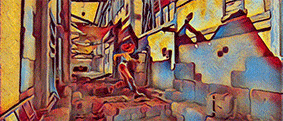
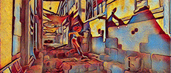

Yunhe Wang
I am a senior researcher at Huawei Noah's Ark Lab, Beijing, where I work on deep learning, model compression, and computer vision, etc. Before that, I did my PhD at school of EECS, Peking University, where I was co-advised by Prof. Chao Xu and Prof. Dacheng Tao. I did my bachelors at school of science, Xidian University.
Email / Google Scholar / Zhi Hu / DBLP
News
Recent Projects
Actually, model compression is a kind of technique for developing portable deep neural networks with lower memory and computation costs. I have done several projects in Huawei including some smartphones' applications in 2019 and 2020 (e.g. Mate 30 and Honor V30). Currently, I am leading the AdderNet project, which aims to develop a series of deep learning models using only additions (Discussions on Reddit).
Project Page | Hardware Implementation
I would like to say, AdderNet is very cool! The initial idea was came up in about 2017 when climbing with some friends at Beijing. By replacing all convolutional layers (except the first and the last layers), we now can obtain comparable performance on ResNet architectures. In addition, to make the story more complete, we recent release the hardware implementation and some quantization methods. The results are quite encouraging, we can reduce both the energy consumption and thecircuit areas significantly without affecting the performance. Now, we are working on more applications to reduce the costs of launching AI algorithms such as low-level vision, detection, and NLP tasks.

Huawei Connect (HC) 2020 | MindSpore Hub
The initial verison of GhostNet was accepted by CVPR 2020, which achieved SOTA performance on ImageNet: 75.7% top1 acc with only 226M FLOPS. In the current version, we release a series computer vision models (e.g. int8 quantization, detection, and larger networks) on MindsSpore 1.0 and Mate 30 Pro (Kirin 990).
 

Huawei Developer Conference (HDC) 2020 | Online Demo
This project aims to develop a video style transfer system on the Huawei Atlas 200 DK AI developer Kit. The latency of the original model for processing one image is about 630ms. After accelerating it using our method, the lantency now is about 40ms.
Talks
Research
I'm interested in devleoping efficient models for computer vision (e.g. classification, detection, and super-resolution) using pruning, quantization, distilaltion, NAS, etc.
Conference Papers:
- Winograd Algorithm for AdderNet
Wenshuo Li, Hanting Chen, Mingqiang Huang, Xinghao Chen, Chunjing Xu, Yunhe Wang
ICML 2021 | paper - Distilling Object Detectors via Decoupled Features
Jianyuan Guo, Kai Han, Yunhe Wang, Wei Zhang, Chunjing Xu, Chang Xu
CVPR 2021 - HourNAS: Extremely Fast Neural Architecture Search Through an Hourglass Lens
Zhaohui Yang, Yunhe Wang, Xinghao Chen, Jianyuan Guo, Wei Zhang,
Chao Xu, Chunjing Xu, Dacheng Tao, Chang Xu
CVPR 2021 | paper | MindSpore code - Manifold Regularized Dynamic Network Pruning
Yehui Tang, Yunhe Wang, Yixing Xu, Yiping Deng, Chao Xu, Dacheng Tao, Chang Xu
CVPR 2021 | paper | MindSpore code - Learning Student Networks in the Wild
Hanting Chen, Tianyu Guo, Chang Xu, Wenshuo Li, Chunjing Xu, Chao Xu, Yunhe Wang
CVPR 2021 - AdderSR: Towards Energy Efficient Image Super-Resolution
Dehua Song*, Yunhe Wang*, Hanting Chen, Chang Xu, Chunjing Xu, Dacheng Tao
CVPR 2021 (* equal contribution) | paper | code | Oral Presentation - ReNAS: Relativistic Evaluation of Neural Architecture Search
Yixing Xu, Yunhe Wang, Kai Han, Yehui Tang, Shangling Jui, Chunjing Xu, Chang Xu
CVPR 2021 | paper | Oral Presentation | MindSpore code - Pre-Trained Image Processing Transformer
Hanting Chen, Yunhe Wang, Tianyu Guo, Chang Xu, Yiping Deng, Zhenhua Liu,
Siwei Ma, Chunjing Xu, Chao Xu, Wen Gao
CVPR 2021 | paper | MindSpore code | Pytorch code - Data-Free Knowledge Distillation For Image Super-Resolution
Yiman Zhang, Hanting Chen, Xinghao Chen, Yiping Deng, Chunjing Xu, Yunhe Wang
CVPR 2021 - Positive-Unlabeled Data Purification in the Wild for Object Detection
Jianyuan Guo, Kai Han, Han Wu, Xinghao Chen, Chao Zhang, Chunjing Xu, Chang Xu, Yunhe Wang
CVPR 2021 - One-shot Graph Neural Architecture Search with Dynamic Search Space
Yanxi Li, Zean Wen, Yunhe Wang, Chang Xu
AAAI 2021 - Adversarial Robustness through Disentangled Representations
Shuo Yang, Tianyu Guo, Yunhe Wang, Chang Xu
AAAI 2021 - Kernel Based Progressive Distillation for Adder Neural Networks
Yixing Xu, Chang Xu, Xinghao Chen, Wei Zhang, Chunjing Xu, Yunhe Wang
NeurIPS 2020 | paper | Spotlight | code - Model Rubik's Cube: Twisting Resolution, Depth and Width for TinyNets
Kai Han*, Yunhe Wang*, Qiulin Zhang, Wei Zhang, Chunjing Xu, Tong Zhang
NeurIPS 2020 (* equal contribution) | paper | code - Residual Distillation: Towards Portable Deep Neural Networks without Shortcuts
Guilin Li*, Junlei Zhang*, Yunhe Wang, Chuanjian Liu, Matthias Tan, Yunfeng Lin,
Wei Zhang, Jiashi Feng, Tong Zhang
NeurIPS 2020 (* equal contribution) | paper | code - Searching for Low-Bit Weights in Quantized Neural Networks
Zhaohui Yang, Yunhe Wang, Kai Han, Chunjing Xu, Chao Xu, Dacheng Tao, Chang Xu
NeurIPS 2020 | paper | code - SCOP: Scientific Control for Reliable Neural Network Pruning
Yehui Tang, Yunhe Wang, Yixing Xu, Dacheng Tao, Chunjing Xu, Chao Xu, Chang Xu
NeurIPS 2020 | paper | code - Adapting Neural Architectures Between Domains
Yanxi Li, Zhaohui Yang, Yunhe Wang, Chang Xu
NeurIPS 2020 | paper | code - Discernible Image Compression
Zhaohui Yang, Yunhe Wang, Chang Xu, Peng Du, Chao Xu, Chunjing Xu, Qi Tian
ACM MM 2020 | paper - Optical Flow Distillation: Towards Efficient and Stable Video Style Transfer
Xinghao Chen*, Yiman Zhang*, Yunhe Wang, Han Shu, Chunjing Xu, Chang Xu
ECCV 2020 (* equal contribution) | paper | code - Learning Binary Neurons with Noisy Supervision
Kai Han, Yunhe Wang, Yixing Xu, Chunjing Xu, Enhua Wu, Chang Xu
ICML 2020 | paper - Neural Architecture Search in a Proxy Validation Loss Landscape
Yanxi Li, Minjing Dong, Yunhe Wang, Chang Xu
ICML 2020 | paper - On Positive-Unlabeled Classification in GAN
Tianyu Guo, Chang Xu, Jiajun Huang, Yunhe Wang, Boxin Shi, Chao Xu, Dacheng Tao
CVPR 2020 | paper - CARS: Continuous Evolution for Efficient Neural Architecture Search
Zhaohui Yang, Yunhe Wang, Xinghao Chen, Boxin Shi, Chao Xu, Chunjing Xu, Qi Tian, Chang Xu
CVPR 2020 | paper | code - AdderNet: Do We Really Need Multiplications in Deep Learning?
Hanting Chen*, Yunhe Wang*, Chunjing Xu, Boxin Shi, Chao Xu, Qi Tian, Chang Xu
CVPR 2020 (* equal contribution) | paper | code | Oral Presentation
- A Semi-Supervised Assessor of Neural Architectures
Yehui Tang, Yunhe Wang, Yixing Xu, Hanting Chen, Boxin Shi, Chao Xu, Chunjing Xu, Qi Tian, Chang Xu
CVPR 2020 | paper - Hit-Detector: Hierarchical Trinity Architecture Search for Object Detection
Jianyuan Guo, Kai Han, Yunhe Wang, Chao Zhang, Zhaohui Yang, Han Wu, Xinghao Chen, Chang Xu
CVPR 2020 | paper | code - Frequency Domain Compact 3D Convolutional Neural Networks
Hanting Chen, Yunhe Wang, Han Shu, Yehui Tang, Chunjing Xu, Boxin Shi, Chao Xu, Qi Tian, Chang Xu
CVPR 2020 | paper - GhostNet: More Features from Cheap Operations
Kai Han, Yunhe Wang, Qi Tian, Jianyuan Guo, Chunjing Xu, Chang Xu
CVPR 2020 | paper | code - Beyond Dropout: Feature Map Distortion to Regularize Deep Neural Networks
Yehui Tang, Yunhe Wang, Yixing Xu, Boxin Shi, Chao Xu, Chunjing Xu, Chang Xu
AAAI 2020 | paper | code - DropNAS: Grouped Operation Dropout for Differentiable Architecture Search
Weijun Hong, Guilin Li, Weinan Zhang, Ruiming Tang, Yunhe Wang, Zhenguo Li, Yong Yu
IJCAI 2020 | paper - Distilling Portable Generative Adversarial Networks for Image Translation
Hanting Chen, Yunhe Wang, Han Shu, Changyuan Wen, Chunjing Xu, Boxin Shi, Chao Xu, Chang Xu
AAAI 2020 | paper - Efficient Residual Dense Block Search for Image Super-Resolution
Dehua Song, Chang Xu, Xu Jia, Yiyi Chen, Chunjing Xu, Yunhe Wang
AAAI, 2020 | paper | code - Positive-Unlabeled Compression on the Cloud
Yixing Xu, Yunhe Wang, Hanting Chen, Kai Han, Chunjing Xu, Dacheng Tao, Chang Xu
NeurIPS 2019 | paper | code | supplement - Data-Free Learning of Student Networks
Hanting Chen,Yunhe Wang, Chang Xu, Zhaohui Yang, Chuanjian Liu, Boxin Shi,
Chunjing Xu, Chao Xu, Qi Tian
ICCV 2019 | paper | code - Co-Evolutionary Compression for Unpaired Image Translation
Han Shu, Yunhe Wang, Xu Jia, Kai Han, Hanting Chen, Chunjing Xu, Qi Tian, Chang Xu
ICCV 2019 | paper | code - Searching for Accurate Binary Neural Architectures
Mingzhu Shen, Kai Han, Chunjing Xu, Yunhe Wang
ICCV Neural Architectures Workshop 2019 | paper - LegoNet: Efficient Convolutional Neural Networks with Lego Filters
Zhaohui Yang, Yunhe Wang, Hanting Chen, Chuanjian Liu, Boxin Shi, Chao Xu, Chunjing Xu, Chang Xu
ICML 2019 | paper | code - Learning Instance-wise Sparsity for Accelerating Deep Models
Chuanjian Liu, Yunhe Wang, Kai Han, Chunjing Xu, Chang Xu
IJCAI 2019 | paper - Attribute Aware Pooling for Pedestrian Attribute Recognition
Kai Han, Yunhe Wang, Han Shu, Chuanjian Liu, Chunjing Xu, Chang Xu
IJCAI 2019 | paper - Crafting Efficient Neural Graph of Large Entropy
Minjing Dong, Hanting Chen, Yunhe Wang, Chang Xu
IJCAI 2019 | paper - Low Resolution Visual Recognition via Deep Feature Distillation
Mingjian Zhu, Kai Han, Chao Zhang, Jinlong Lin, Yunhe Wang
ICASSP 2019 | paper - Learning Versatile Filters for Efficient Convolutional Neural Networks
Yunhe Wang, Chang Xu, Chunjing Xu, Chao Xu, Dacheng Tao
NeurIPS 2018 | paper | code | supplement - Towards Evolutionary Compression
Yunhe Wang, Chang Xu, Jiayan Qiu, Chao Xu, Dacheng Tao
SIGKDD 2018 | paper - Autoencoder Inspired Unsupervised Feature Selection
Kai Han, Yunhe Wang, Chao Zhang, Chao Li, Chao Xu
ICASSP 2018 | paper | code - Adversarial Learning of Portable Student Networks
Yunhe Wang, Chang Xu, Chao Xu, Dacheng Tao
AAAI 2018 | paper - Beyond Filters: Compact Feature Map for Portable Deep Model
Yunhe Wang, Chang Xu, Chao Xu, Dacheng Tao
ICML 2017 | paper | code | supplement - Beyond RPCA: Flattening Complex Noise in the Frequency Domain
Yunhe Wang, Chang Xu, Chao Xu, Dacheng Tao
AAAI 2017 | paper - Privileged Multi-Label Learning
Shan You, Chang Xu, Yunhe Wang, Chao Xu, Dacheng Tao
IJCAI 2017 | paper - CNNpack: Packing Convolutional Neural Networks in the Frequency Domain
Yunhe Wang, Chang Xu, Shan You, Chao Xu, Dacheng Tao
NeurIPS 2016 | paper | supplement
Journal Papers:
- Adversarial Recurrent Time Series Imputation
Shuo Yang, Minjing Dong, Yunhe Wang, Chang Xu
IEEE TNNLS 2020 |paper - Learning Student Networks via Feature Embedding
Hanting Chen, Yunhe Wang, Chang Xu, Chao Xu, Dacheng Tao
IEEE TNNLS 2020 | paper - Packing Convolutional Neural Networks in the Frequency Domain
Yunhe Wang, Chang Xu, Chao Xu, Dacheng Tao
IEEE TPAMI 2018 | paper - DCT Regularized Extreme Visual Recovery
Yunhe Wang, Chang Xu, Shan You, Chao Xu, Dacheng Tao
IEEE TIP 2017 | paper - DCT Inspired Feature Transform for Image Retrieval and Reconstruction
Yunhe Wang, Miaojing Shi, Shan You, Chao Xu
IEEE TIP 2016 | paper